1950s-60s round box devices
Later round-box items ditched the idea of being hidden behind a wallpaper, instead focusing more on their design, which at that time started being taken more into consideration.
It's around this time that the use of electricity boomed, and as such these items were very common and can still be found in some older installations.
The BTicino Domino series
Released in the 50s, the Domino series was hugely popular and used a lot in houses built, or retrofitted to have
electricity, during this decade.
Their design was quite interesting, as they were made out of a single moulded piece of bakelite/plastic, which
formed both the body of the device itself as well as holding things in place.
 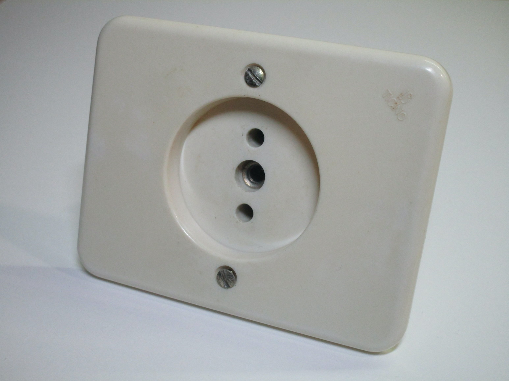
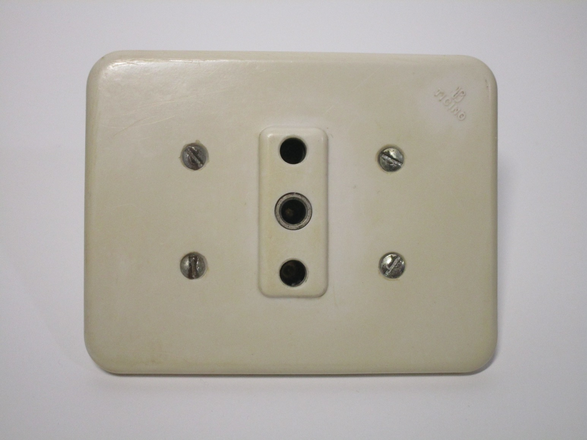
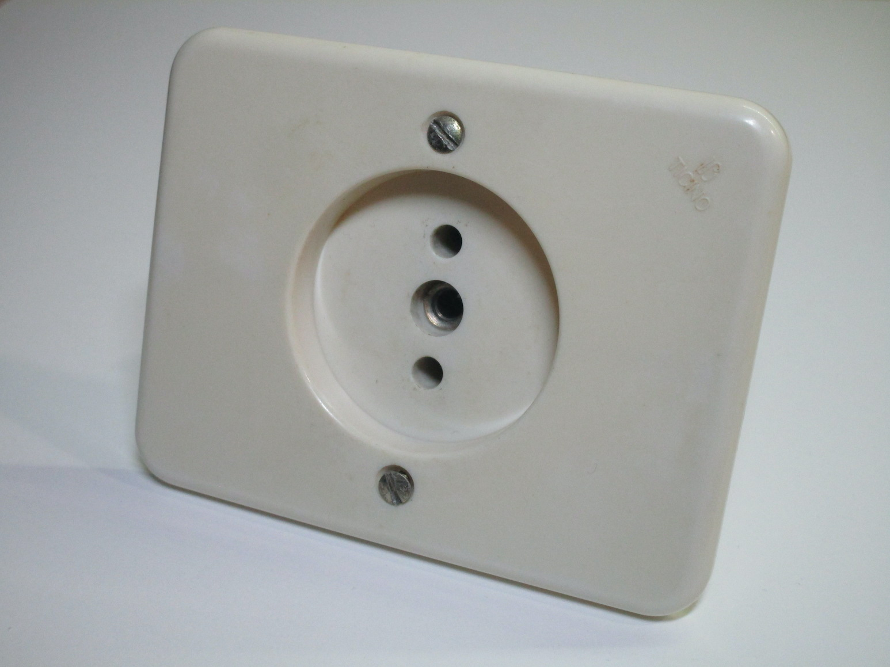
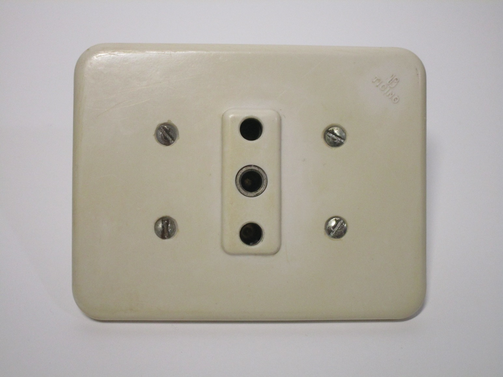
{kind=link}
{kind=link}
On the back, the screw connections are present. These are mainly formed of screw terminals, which can accept stranded wire as well. Some of these items also have a flexible plastic piece which acts as a sort of band to keep the mounting arms in place while the device is being installed.
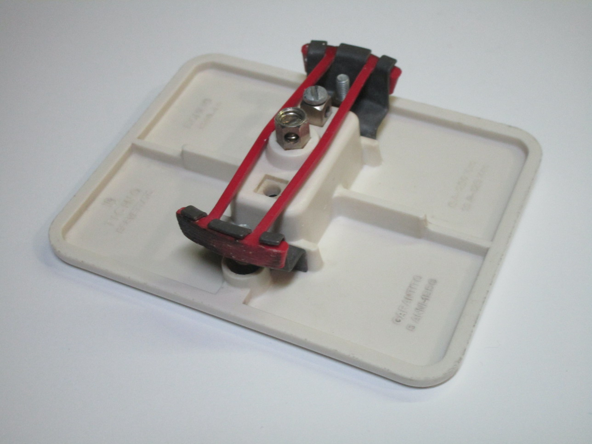 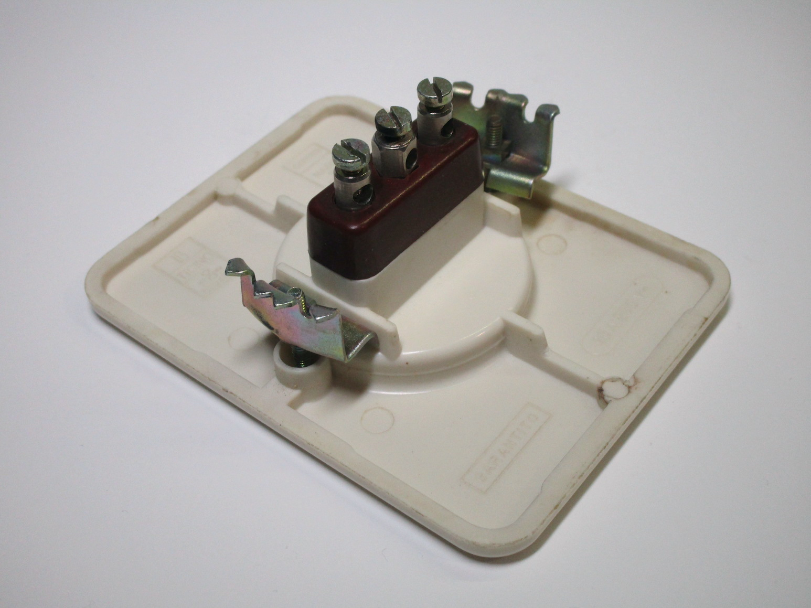 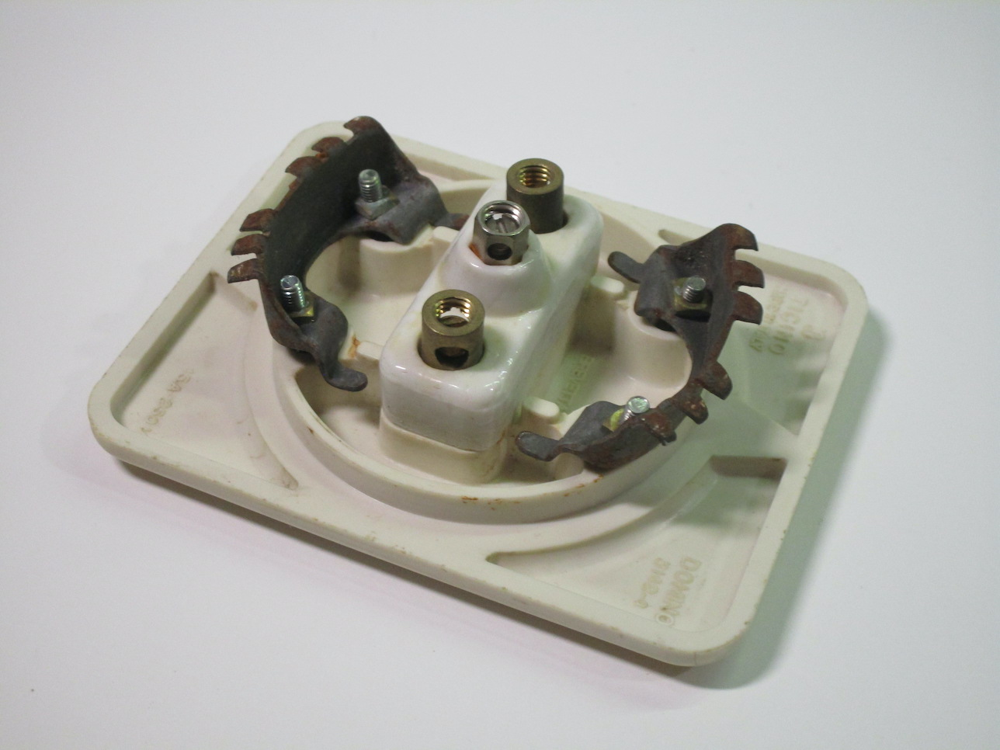{kind=link}
{kind=link}
{kind=link}
Vimar dual power socket
Rating: 10/16A 250V
This dual power socket can accept 10A and 16A plugs. While round boxes initially were only made to hold a maximum of one power socket, later ones managed to fit up to two. The styling of it is fairly similar to the Domino series - perhaps to be appealing to homes that already had some Domino devices installed, and needed a socket with a similar style of design.
Notably, the two outlets are recessed slightly - this was somewhat popular around the 60s-70s, as electrical safety became more important and before plugs with sleeved pins became common. This isn't a perfect solution, however, as the recesses are too narrow to completely prevent someone from touching the live pins, and their presence means that some larger plugs wouldn't be able to fit.
It's worth noting that both sockets have entirely separate terminals for wiring: this was because, at the time it was still common to have separate supplies for lighting and appliances (even for homes that had already switched to 220V for lighting); houses like that would have wired them to two separate circuits going back to two distinct power meters.

 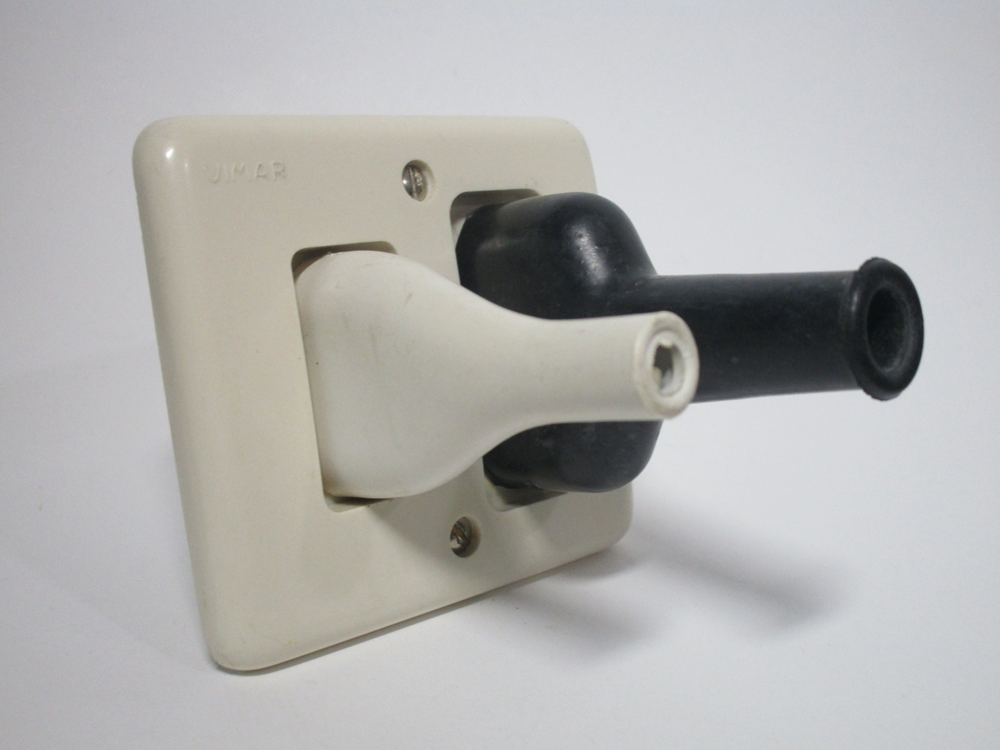
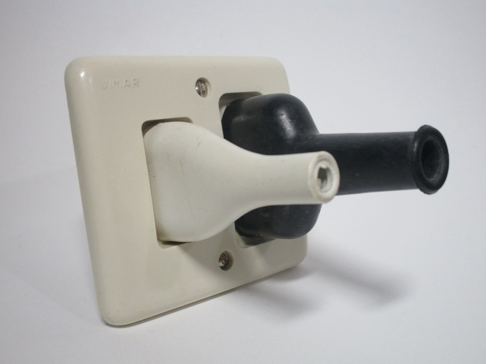
{kind=link}
The BTicino Piuma series
The Piuma series is interesting because, while it is still a non-modular design, it introduced the idea of changeable cover plates, and it has a design language much more similar to the later Magic series.
Cover plates were of two styles, depending on the device: one with a larger hole, used for 16A sockets and double light switches, and one with a smaller hole, which is the style shown here; in a way, this is is similar to ones on American devices.
Notably, despite the device largely being made out of metal and metal faceplates being very common, there isn't an earth terminal of any sort. Of course, given the age of this device, it likely was used in a house without any earthing whatsoever.
 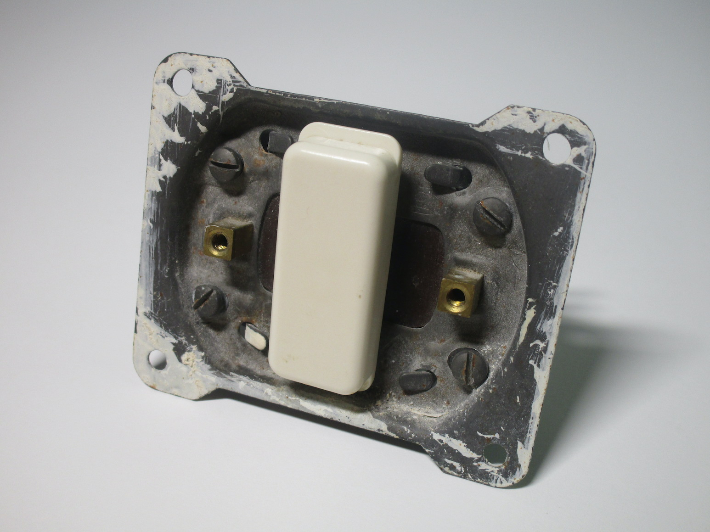
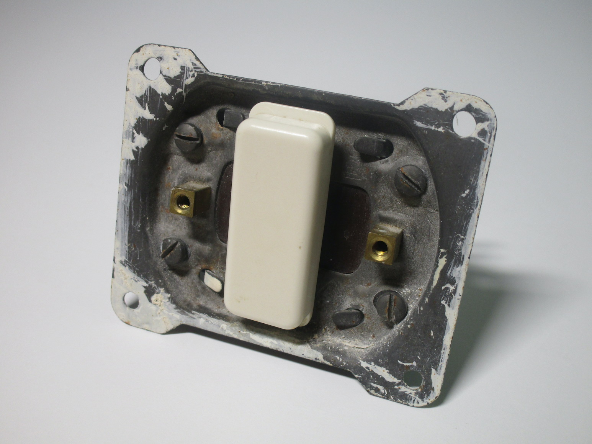
{kind=link}

Newer round box devices
While most new installations switched to rectangular boxes around the 70s, items for round boxes continued to be made and are still available nowadays, primarily being used as replacements for older houses.
Modern Domino series device
Rating: 16A 250V
Th Domino series continued to be sold for a long time, with devices like these conforming to more modern safety standards - it has recessed contacts and safety shutters - and having newer features, such as being a Bipasso socket (that is, it accepts both 10 and 16A plugs).
In general, this socket is just a (relatively) modern device that just happens to have the Domino name and a similar styling to the original Domino series. This would have been a useful replacement for people in older installations looking to replace some of their devices or add a new circuit.
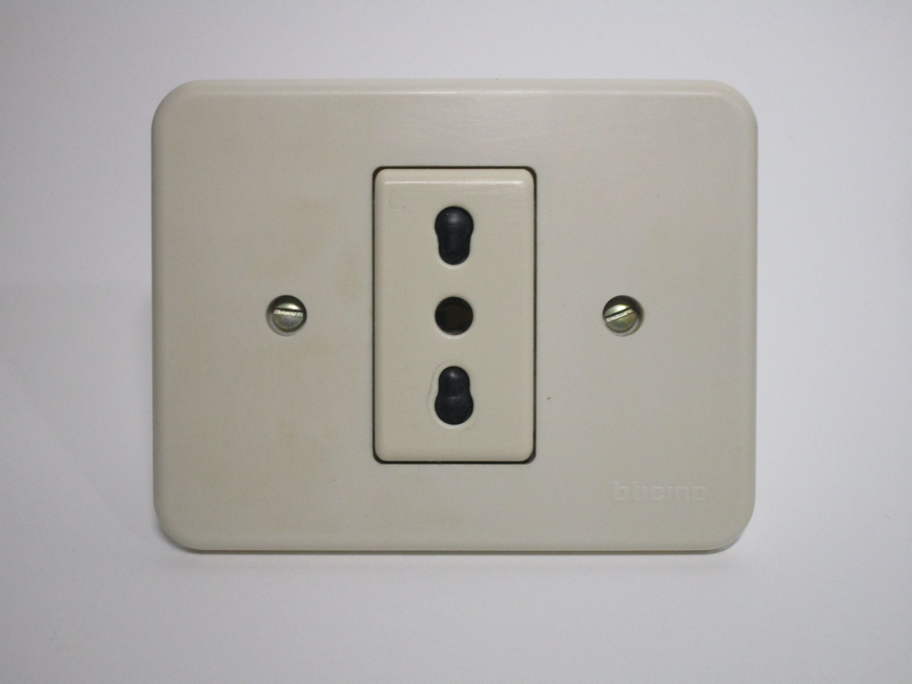 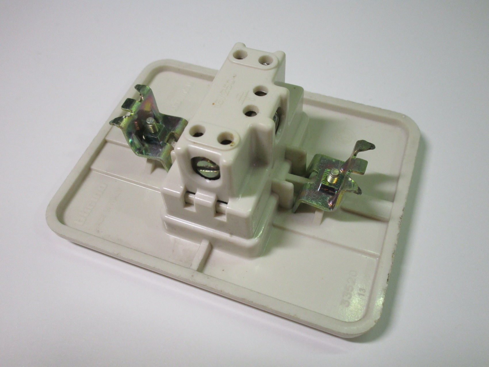 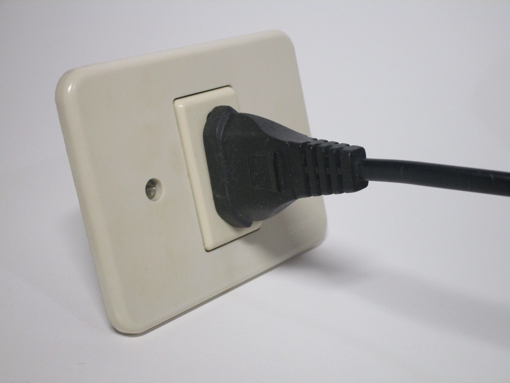{kind=link}
{kind=link}
{kind=link}